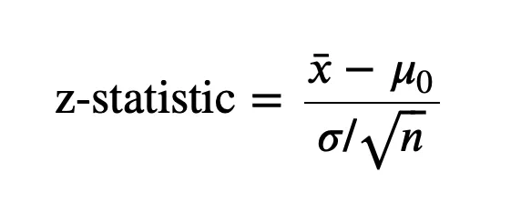
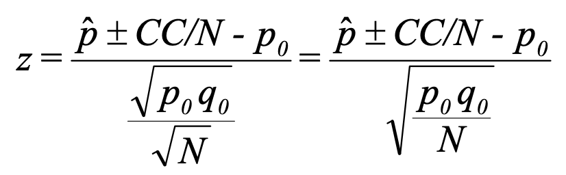
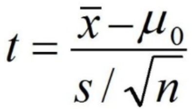
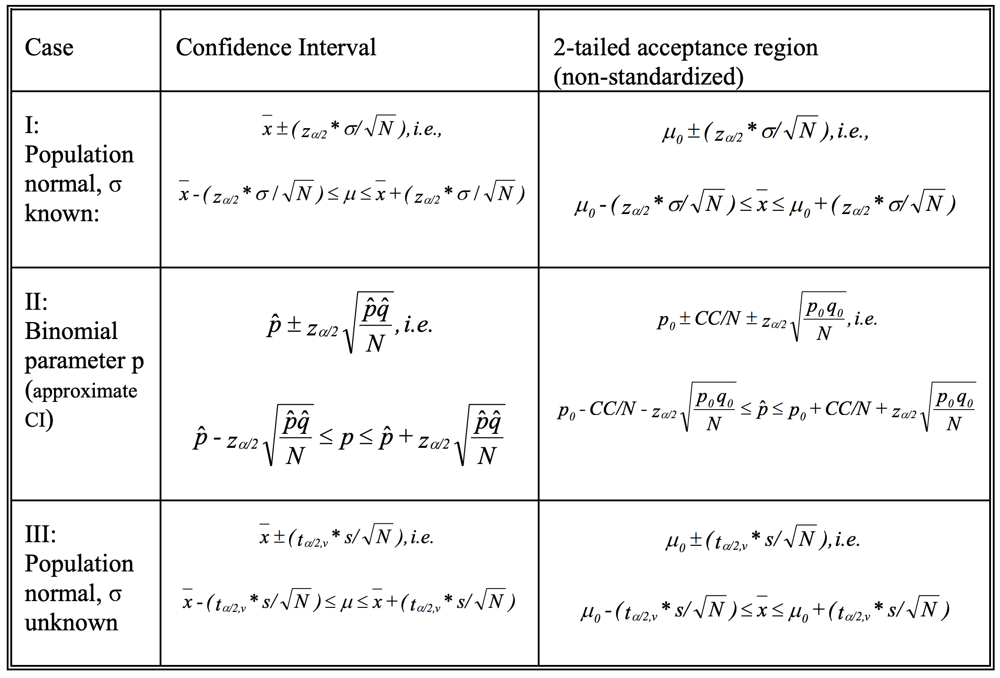
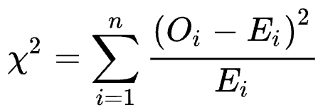

The standard procedure is to assume H₀ is true, and try to determine whether there is sufficient evidence to declare H₀ false.
Reject H₀ only when chance is small that H₀ is true.
Type I error: reject the null hypothesis when the null is true. The probability of Type I error = 𝛼.
α = Probability of Type I error = p(rejecting H₀ | H₀ is true)
Type II error: accept the null hypothesis when it is not true. The probability of Type II error = β.
β = Probability of Type II error = p(accepting H₀ | H₀ is false)
α and β are not independent of each other. Increasing sample size n cause both to decrease.
Testing procedure:
Typically, α is set to 0.05 or 0.01. If α = 0.05, it would erroneously reject H₀ when H₀ is true 5% of the time.
So far, we have covered steps for hypothesis testing. Here summarizes the test statistic for different cases.
Z-statistic can be used to test normal distribution’s parameter μ:
X is a random variable of normal distribution with known variance σ² and unknown mean μ.
The null hypothesis is H₀: E(X) = μ₀

Note:
Z-statistic can be used to test binomial distribution’s parameter p:
X is random variable of binomial distribution with unknown success rate p.
According to the properties of sample variable,
E(X̄) = μ = p
V(X̄) = σ² / n = pq
Where u = p and σ² = npq are mean and variance of the binomial distribution sampled.
Based on Central Limit Theorem, X̄ ~ N(μ, σ²/n) = N(μ, pq/n) for large n.
The null hypothesis is H₀: p = p₀

Note:
Z-statistic does not work when variance σ² is unknown. Instead, T-statistic can be used to test normal distribution’s parameter u:
X is a random variable of normal distribution with unknown variance σ² and mean μ.
Use sampled variance s² to replace population variance σ².
The null hypothesis is H₀: E(X) = μ₀

Note:
Confidence intervals use T-transformation to estimate population mean interval from sample mean and variance with 100(1 - α)% probability. This is essentially the same as the T-statistic:

Z-statistic and T-Statistic are parametric statistics:
Chi-square test concerns with categorical data:
| Test Type | Null Hypothesis | Example |
|---|---|---|
| Goodness-of-Fit | The observed data follows the expected distribution | Roll a 6-sided die 60 times. H₀: the die is fair, each side has probability 1⁄6 |
| Test of Independence | Two variables are independent | Survey people on gender and voting preference. H₀: gender and voting preference are not associated |
| Test of Homogeneity | The distributions of the categorical variable are the same across groups | Test whether 3 different cities have the same preference distribution for soda brands |
The pearson chi-square statistic:

Note:
Assumptions required for using the Pearson chi-square test:
Transform the original statistic
𝒳²(n) = ∑((Oᵢ - Eᵢ)²/Eᵢ) for 1 ≤ i ≤ n
= ∑((Oᵢ - Eᵢ)/sqrt(Eᵢ))²
Based on chi-square’s property, if we can prove Zᵢ = (Oᵢ - Eᵢ)/sqrt(Eᵢ) ~ N(0, 1), then ∑Zᵢ² follows chi-square distribution.
Key idea: each observed count Oᵢ is a random variable that follows a binomial or multinomial
distribution under the hypothesis.
Oᵢ is essentially the number of successes in n trials with probability fo success pᵢ.
For a large enough n, the binomial variable Oᵢ is approximately:
Oᵢ ~ N(Npᵢ, Npᵢqᵢ) = N(Eᵢ, Eᵢqᵢ).
So:
(Oᵢ - Eᵢ) / sqrt(Eᵢqᵢ) = Zᵢ / sqrt(qᵢ) ~ N(0, 1)
qᵢ is not necessarily close to 1, how could Zᵢ approximates to standard normal distribution???
An extreme case is a 2 categorical data with q₀ = 0.99 and q₁ = 0.01.
Z₀ is close to standard normal distribution, but apparently Z₁ is NOT!
To answer the above question, it requires a quite lengthy proof that can be found here, a course material from MIT.
When samples are small, the distributions of 𝒳² (and other large-sample based statistics) are not well approximated by the chi-squared distribution. Their p-values are not to be trusted. In such situations, we can perform inference using an exact distribution (or estimates of exact distributions), but we should keep in mind that p-values based on exact tests can be conservative (i.e, measured to be larger than they really are).
We may use an exact test if:
The Fisher’s exact test can calculate probability using hypergeometric distribution. The table shown maps a problem in question to the corresponding hypergeometric statement, given fixed N, m, n.
| Successes | Failures | Total | |
|---|---|---|---|
| Sampled | x = a | n-x = b | n |
| Not Sampled | m-x = c | N-m-n+x = d | N-n |
| Total | m | N-m | N |
Hypergeometric probability gives chance of getting this exact table. With a simple transformation, we can get the probabilty of getting the exact table:
p(X = x) = ((a+b)! * (c+d)! * (a+c)! * (b+d)!) / (a! * b! * c! * d! * N!)
The p-value is calculated as ∑p(X ≤ x) or ∑p(X ≥ x) depending on the definition of extreme. It represents the probability of observing the data if the null hypothesis were true. If the alternative hypothesis is really about the “Sampled” action causes more “Successes” (hence are associated), then it should use ∑p(X ≥ x). A small p-value means, if the null hypothesis were true, the observed data (or more extreme) is unlikely to have occurred by random chance. But the table data is observed. This leads to the rejection of the null hypothesis and suggests a statistically significant association between variables.
One researcher believes a coin is “fair,” the other believes the coin is biased toward heads.
The coin is tossed 20 times, yielding 15 heads. Indicate whether or not the first researcher’s
position is supported by the results. Use α = .05.
Solution:
If the coin is fair, p = 0.5.
When n is large, we can use X ~ N(np, npq) = N(10, 5)
(1) Define hypotheses:
H₀: E(X) = 10 heads
H₁: E(X) > 10 heads
(2) Use Z = (number of heads ± 0.5 - 10) / sqrt(5/20) as the test statistic.
(3) Acceptance region is p(Z ≤ z) = 0.95 = 1 - α.
So z = 1.65
Reject H₀ if z > 1.65
(4) z = (15 - 0.5 - 10) / 0.5 = 2.01. H₀ is rejected.
Note: ± 0.5 in step 2 is a correction for continuity since X is not continuous.
To do this, add 0.5 to x when x < Np, and subtract 0.5 from x when x > Np.
Design a decision rule to test the hypothesis that a coin is fair if a sample of 64 tosses of
the coin is taken with a level of significance of 0.05.
Solution:
If the coin is fair, p = 0.5.
When n is large, we can use X ~ N(np, npq) = N(32, 16)
(1) Define hypotheses:
H₀: E(X) = 32 heads
H₁: E(X) ≠ 32 heads
(2) Use Z = (number of heads ± 0.5 - 32) / sqrt(16) as the test statistic.
(3) Acceptance region is p(-z ≤ Z ≤ z) = 0.95 = 1 - α.
So z = 1.96
Reject H₀ if z < 1.96 or z > 1.96
Note how the examples above use the Z-statistic without the sqrt(n) in denominator. When converting the original n Bernoulli trials into a binomial distribution, all tosses are combined to become one binomial observation of x successes. Therefore, sqrt(1) is ignored and the used formula is still a Z-statistic.
A manufacture of steel rods considers that the manufacturing process is working properly if
the mean length of the rods is 8.6. The standard deviation of these rods always runs about
0.3 inches. Suppose a random sample of size n = 36 yields an average length of 8.7 inches.
Should the manufacturer conclude the process is working properly or improperly?
Solution:
Sample size n is large enough to consider X̄ as a normal distribution.
Since population μ and σ² are known, Z-statistic can be used.
(1) Define hypotheses:
H₀: E(X) = μ₀ = 8.6
H₁: E(X) ≠ 8.6
(2) Use Z = (X̄ - μ₀) / (σ / sqrt(n)) ~ N(0, 1) as the test statistic
(3) Acceptance region is p(-z ≤ Z ≤ z) = 0.95 = 1 - 2 * α.
So z = 1.96
Reject H₀ if z < 1.96 or z > 1.96
(4) z = (8.7 - 8.6) / (0.3 / sqrt(36)) = 2
The null hypothesis H₀ should be rejected with level of significance 0.05.
A Bowler claims that she has a 215 average. In her latest performance, she scores 188,
214, and 204. Would you conclude the bowler is “off her game?”
Solution:
Sample size n = 3.
Population variance is unknown. So T-statisic can be used.
x̄ = (188 + 214 + 204) / 3 = 202
s² = ((188 - 202)² + (214 -202)² + (204 - 202)²) / (3 - 1)
= 172
(1) Define hypotheses:
H₀: E(X) = μ₀ = 215
H₁: E(X) ≠ 215
(2) Use T = (X̄ - μ₀) / (s / sqrt(n)) ~ t-distribution with α and degree of freedoms 2.
(3) Critical region is p(-t ≤ T ≤ t) = 0.05 = α.
So t = 4.303
Reject H₀ if t < -4.303 or t > 4.303
(4) t = (202 - 215) / sqrt(172 / 3) = -1.717
The null hypothesis H₀ cannot be rejected with level of significance 0.05.
Below are the results of rolling a die 60 times. Do you consider the die fair?
| Face | Observed Frequency |
| ----- | ------------------ |
| 1 | 8 |
| 2 | 9 |
| 3 | 10 |
| 4 | 11 |
| 5 | 12 |
| 6 | 10 |
| Total | 60 |
Solution:
H₀: the die is fair, each face has probability 1/6
H₁: the die is not fair (at least one face has a difference probability)
Under H₀ each face should occur 60 / 6 = 10 times, i.e. Eᵢ = 10
Compute chi-square statistic:
𝒳²(n) = ∑((Oᵢ - Eᵢ)²/Eᵢ)
= (8 - 10)²/10 + (9 - 10)²/10 ... + (10 - 10)²/10
= 1.0
Degrees of freedom (df) = number of categories - 1
= 6 - 1
= 5
For 𝛼 = 0.05 and df = 5, 𝑥² = 11.070
Since 𝒳²(n) ≪ 𝑥², H₀ can NOT be rejected.
We consider the die is fair.
Here is a survey of 100 people about their gender and voting preference (Party A or Party B):
| | Party A | Party B | Row Total |
| ------------ | ------- | ------- | --------- |
| Male | 20 | 30 | 50 |
| Female | 30 | 20 | 50 |
| Column Total | 50 | 50 | 100 |
Do you consider gender and voting preference are independent?
Solution:
H₀: gender and voting preference are independent.
H₁: gender and voting are associated.
Compute expected counts for each table cell:
Eᵢⱼ = (Row Totalᵢ) * (Column Totalⱼ) / Total
| | Party A | Party B |
| ------ | ------------ | ------------ |
| Male | 50*50/100=25 | 50*50/100=25 |
| Female | 50*50/100=25 | 50*50/100=25 |
Compute chi-square statistic:
𝒳² = ∑((Oᵢⱼ - Eᵢⱼ)²/Eᵢⱼ)
= (20 - 25)²/25 + (30 - 25)²/25 ... + (20 - 25)²/25
= 4.0
Degrees of freedom (df) = (rows - 1) * (columns - 1) = 1
For 𝛼 = 0.05 and df = 1, 𝑥² = 3.841
Since 𝒳²(n) > 𝑥², we can reject H₀ and consider gender and voting are NOT independent.
Here is a survey of voters in 3 cities about their preferred political party: A, B, or C.
| City | Party A | Party B | Party C | Row Total |
| ------------- | ------- | ------- | ------- | --------- |
| City 1 | 30 | 10 | 10 | 50 |
| City 2 | 20 | 20 | 10 | 50 |
| City 3 | 10 | 30 | 10 | 50 |
| Column Totals | 60 | 60 | 30 | 150 |
Do you consider these 3 cities have the same party preference distribution?
Solution:
H₀: all cities have the same party preference distribution.
H₁: at least one city's party preference distribution is different.
Compute expected counts for each table cell:
Eᵢⱼ = (Row Totalᵢ) * (Column Totalⱼ) / Total
| City | Party A | Party B | Party C |
| ------ | ------------ | ------------ | ------------ |
| City 1 | 50*60/150=20 | 50*60/150=20 | 50*30/150=10 |
| City 2 | 50*60/150=20 | 50*60/150=20 | 50*30/150=10 |
| City 3 | 50*60/150=20 | 50*60/150=20 | 50*30/150=10 |
Compute chi-square statistic:
𝒳² = ∑((Oᵢⱼ - Eᵢⱼ)²/Eᵢⱼ)
= (30 - 20)²/20 + (10 - 20)²/20 + (10 - 10)²/10... + (10 - 10)²/25
= 20.0
Degrees of freedom (df) = (rows - 1) * (columns - 1) = 4
For 𝛼 = 0.05 and df = 4, 𝑥² = 9.488
Since 𝒳²(n) > 𝑥², we can reject H₀ and consider not all cities share the same distribution
of party preference.
Here is a clinical trial tests a vaccine on a small group.
| | Infected | Not Infected | Total |
| ------- | -------- | ------------ | ----- |
| Vaccine | 1 | 9 | 10 |
| Placebo | 8 | 2 | 10 |
| Total | 9 | 11 | 20 |
Do you consider infection status is associated with receiving the vaccine?
Solution:
H₀: Vaccination and infection are independent (vaccine does not reduce infection).
H₁: Vaccination and infection are associated.
p-value = p(X = 1) + p(X = 0)
= 0.0268 + 0.0006
= 0.0275
Since p-value < 0.05, the chance of observing extreme cases should be rare.
But we observed it.
H₀ is rejected, i.e. vaccine appears effective in reducing infection.